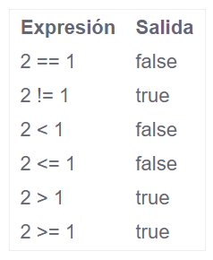

Estructuras condicionales
Primero hay que saber que son las estructuras de control de flujo de un lenguaje. Las estructuras de control permiten controlar el flujo de la ejecución del código. Para poder construir programas, es necesario poder echar mano de ellas de forma que representen la lógica de “que hacer en caso de” y “a donde ir”.
¿Que estructuras de control existen en el lenguaje Go?
- if y else
- Operadores de comparación
- Operadores aritmeticos
- Operadores lógicos
- switch
- for
- defer
Sentencia if en Go
Esta es la sentencia mas sencilla de utilizar y se encuentra en casí todos los lenguages de programación. Representa el paradigma de lo que sucede si una condición se cumple y en combinación con la sentencia else puede especificar un camino alternativo.
Ejemplo del uso de If en Go:
Sentencia else en Go
La sentencia else que se puede traducir como “si no…” o “de lo contrario…", permite definir un bloque de código en caso de que la condición del if no se cumpla.
Ejemplo del uso de else en Go
Ahora el ejemplo de la sentencia If esta actualizado ya que con el uso de "else" podemos abarcar el caso donde la edad sea menor a 18
Else if en Go
Existen casos en los cuales lo que se requiere es poder evaluar multiples condiciones, no solo dos. En cuyo caso es posible:
- Anidar un If dentro de otro
- Utilizar else if para cubrir cada una de las condiciones.
Ejemplo de Else if en Go
En este ejemplo hemos capturado una variable juguete.
- En el primer if verificamos si juguete == persona.
- Si la anterior condición no se cumple, los siguientes else if validan uno por uno si juguete es una cosa, animal.
- Si no se cumple ninguna de las condiciones se imprime por default la sentencia else.
Operadores de comparación en Go
¿Que son?
Las expresiones evaluan al final valores boleanos, es decir verdadero (true) o falso (false). Esto quiere decir que cualquier comparación que hagamos entre 2 valores retornará true o false. La lista de comparadores puede evaluar las siguientes expresiones.
Ejemplos de uso

Operadores aritmeticos en Go
¿Que son?
Los operadores aritméticos se encargan de ejecutar expresiones aritméticas. Es decir, sumar, restar, multiplicar, dividir, etc.
Ejemplos de uso
Hay que resaltar que para poder realizar estas operaciones, tanto "x" como "y" tienen que ser del mismo tipo.
Operadores logicos en Go
¿Que son?
Los operadores logicos sirven como apoyo a las estructuras de control, para combinar multiples expresiones. Hablamos de que una expresión lógica puede ser a == b (es a igual a b?). Pero que sucede si la expresión es mas compleja, y ademas de a ser igual a b, tiene que ser diferente de c?. En este caso hacemos uso de los operadores lógicos.
Ejemplo del operador logico AND ( && ) en Go
Ejemplo del operador OR ( || ) en Go
Switch en Go
¿En que consiste?
La sentencia switch es equivalente al uso de multiples if, elseif, pero presentada en una forma mas ordenada.
Ejemplo de uso
Podemos ver que este ejemplo es mas ordenado que ir haciendo if, elseif. Switch toma un valor, en este caso juguete y lo compara para cada uno de los case. Ademas los multiple cases que se pueden evaluar, cuando ninguno de ellos se cumple, se puede especificar una ultima condición a ejecutar que es default. Esta es equivalente al else final despues de un conjunto de else if.
Bucle for
La sentencia for permite te un bloque de codigo se repita N veces. Esto es usualmente conocido como loop o bucle.
Ejemplo del uso del bucle for
El bucle For recibe 3 parametros
- Una expresión inicial (al iniciar el for, i sera igual que 1)
- Una expresión de comparación (en cada iteración se comprobara que i sea menor o igual que repeticiones)
- Una expresión de actualización (al final de cada iteración se incrementara 1 el valor de i)
"Defer" para aplazar funciones
Defer es una caracteristica que permite que Go aplace la ejecución de una funcion. Esto puede ser por ejemplo cuando otra función termina de ejecutarse. El aplazmiento de funciones es generalmente utilizado para realizar tareas de limpieza, una vez que se han completado las actividades a realizar por parte del algoritmo, como cerrar conexiones a base de datos, borrar archivos temporales, limpiar el cache, liberar la memoria, etc. Supongamos ahora que deseamos conectarnos a la base de datos, y queremos que despues de todas las operaciones se realice automaticamente la desconexión, independientemente del flujo de trabajo que el algoritmo siga.
En este caso se crearon 4 funciones:
- Conectar
- Leer
- Actualizar
- Desconectar
Las funciones se invican en el siguiente orden:
Debido a que desconectar() esta precedido de defer, esta automaticamente se disparará hasta el final de la ejecución de las demas funciones. Si ejecutamos el programa nos entregará lo siguiente.
Se pueden utilizar multiples defer, pero hay que tomar en cuenta que el orden en el que se ejecuten es el inverso en el que se definan. Es decir el primero que se defina sera el ultimo, el segundo el penúltimo, el tercero el antepenúltimo, etc.